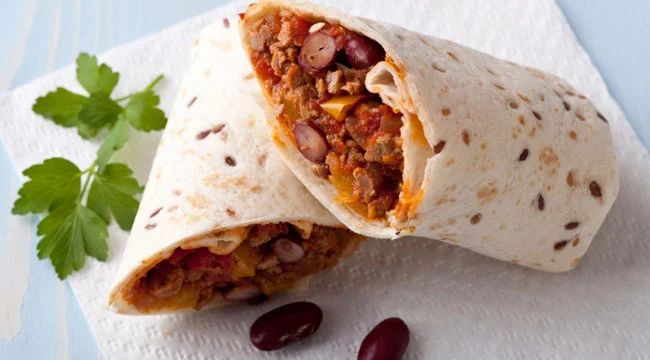

Flavor-Filled Turkey & Bean Burrito

Build muscle with this high-protein twist on a Mexican classic.
Many chefs rely on fat to add flavor to their dishes. It does the trick, but for a man intent
on building muscle while minimizing body fat, it really isn’t an option. Being something of a
gym rat myself, I’ve learned to make high-protein meals that are rich and flavorful—yet still
lower in fat—like these turkey-and-black-bean burritos. They’re designed to satisfy your Mexican
food cravings, but the high protein-to-fat ratio is anything but typical.
Ingredients
- 2 lbs lean ground turkey
- 6 12" whole-wheat tortillas
- ½ cup red onion, diced
- 3 cups black beans (canned, low-sodium)
- ½ cup bell pepper, cored and diced
- ½ cup tomato, diced
- 2 tbsp parsley, finely chopped
- 3 tbsp grapeseed oil
- 1 tsp ground black pepper
- 1 tbsp Tabasco sauce
- Salt to taste
- ¼ cup red wine vinegar
- 1 tbsp stone-ground mustard
- ¼ cup cilantro, finely chopped
- 1 cup low-fat shredded cheese or sour cream
Steps
- Add 2 tbsp grapeseed oil to the sauté pan and place over medium-high heat for 1 to 2
minutes. Add turkey, 1/2 tsp pepper, and Tabasco and brown the meat, stirring regularly
until turkey is cooked through—about 6 to 7 minutes. Drain the fat from the pan, place
cooked turkey on a paper towel, and set aside.
-
Return the sauté pan to medium-high heat, add remaining oil and onions, and cook, stirring
continuously, until onions are slightly translucent. Reduce heat, add peppers, tomatoes,
beans, salt, and remaining pepper, and cook until peppers are soft to the touch—about 10
minutes. Add vinegar, parsley, mustard, cilantro, and cooked turkey. Heat for an additional
2 to 3 minutes.
-
To build a burrito, lay a tortilla on a flat surface and add a sixth (3/4 cup) of the turkey-bean
mixture to the center of the tortilla. Top with cheese, fold, and eat.